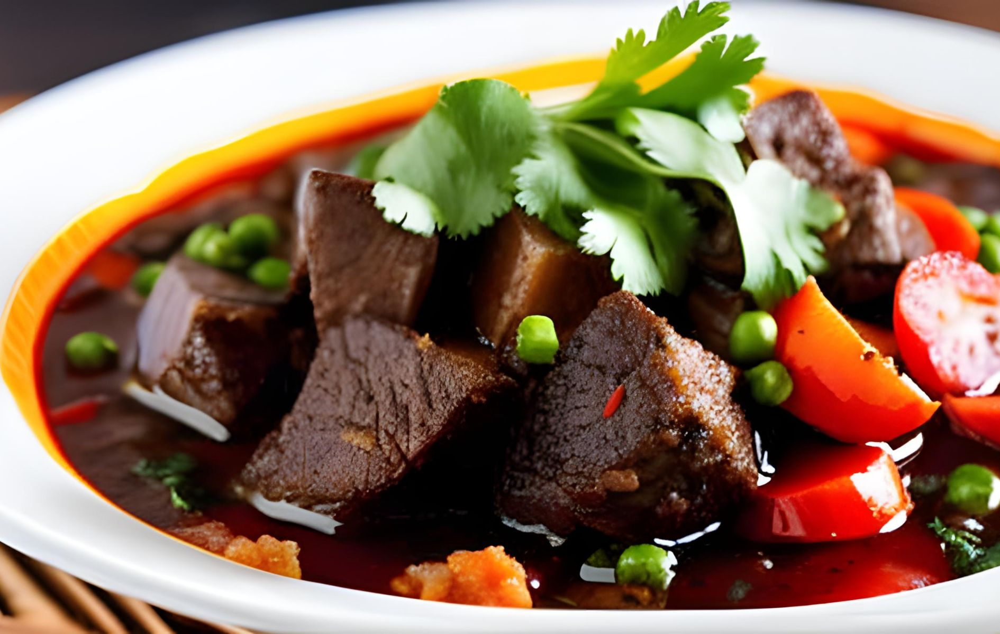
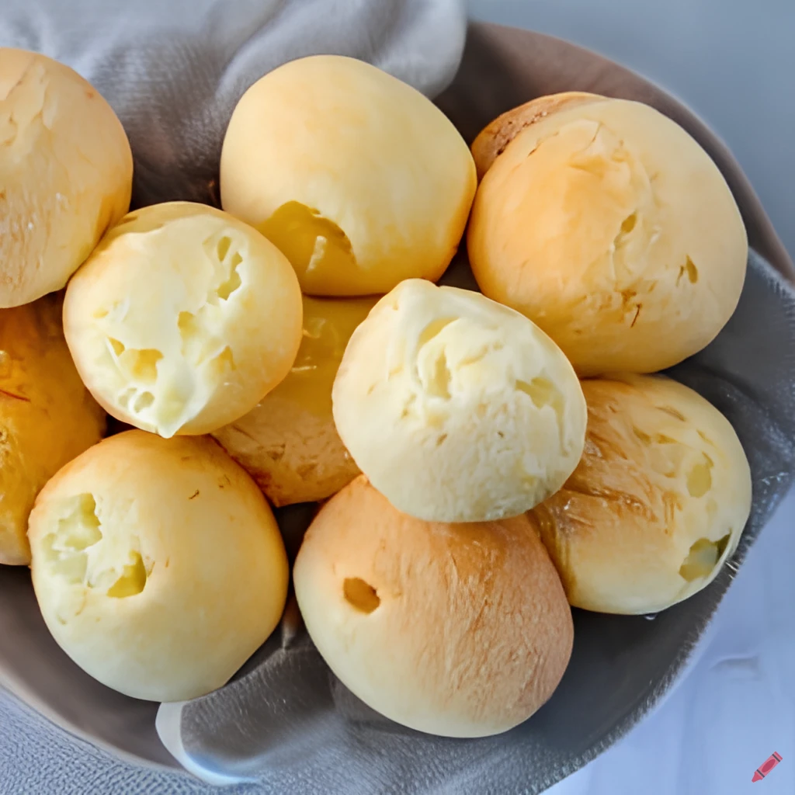
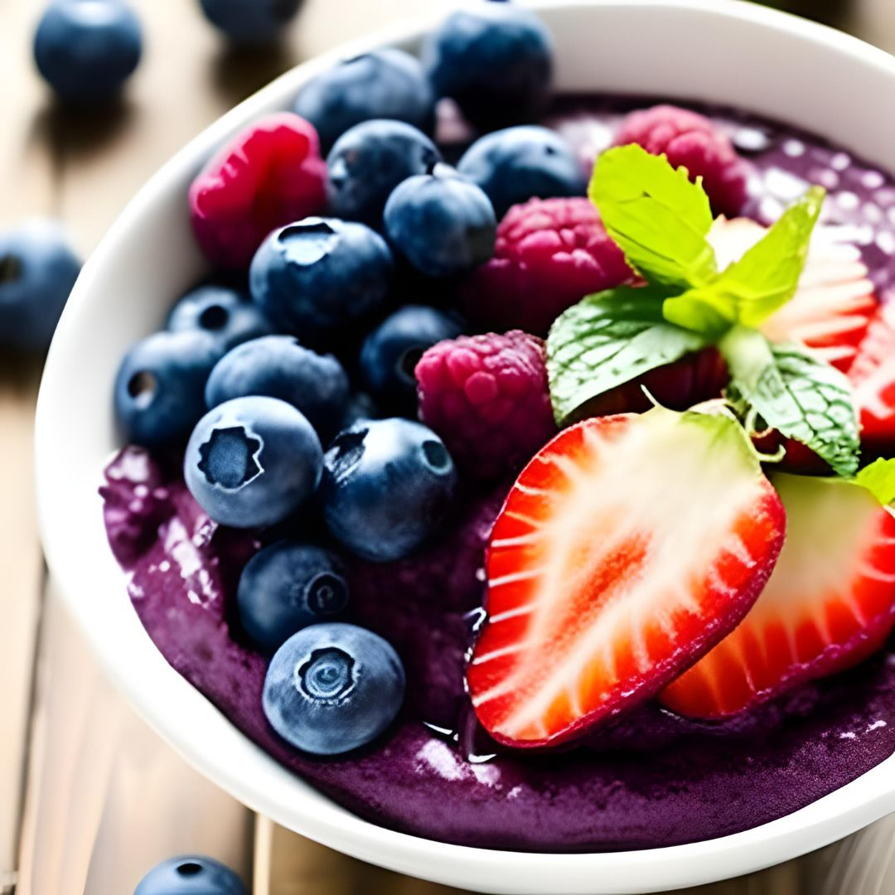

Top 6 Foods You Just Got to Try From Brazil
Brazil, a country brimming with captivating culture, enthralling history, and cherished traditions, has a culinary scene that's nothing short of extraordinary. With influences from diverse regions and cultures, Brazilian food stands out as a unique and enticing fusion. During my immersive journey through Brazil, I savored countless delectable dishes, and now I'm thrilled to share some of my absolute favorites with you.
1. Feijoada
Feijoada, the crown jewel of Brazilian cuisine, reigns as the nation's beloved dish. This stew harmoniously combines black beans, beef, pork, and a medley of savory sausages. Often accompanied by rice, farofa (toasted cassava flour), and verdant greens, this hearty amalgamation of meat and legumes creates a flavorsome and satisfying experience. Originally influenced by African and Portuguese cuisines, Feijoada has evolved over time to become a cherished Brazilian classic.
2. Coxinha
Coxinha, a cherished Brazilian snack, has won the hearts of young and old alike. This delightful treat features a crispy, deep-fried dough ball filled with succulent shredded chicken and creamy cream cheese. The dough, crafted from a delightful blend of wheat flour, milk, and butter, perfectly complements the seasoned filling, infused with notes of onions, garlic, and a harmonious medley of spices. With its contrasting textures and flavors, Coxinha serves as an ideal snack or appetizer.

3. Pão de Queijo
Pão de Queijo, also known as Brazilian cheese bread, takes center stage during breakfast time in Brazil. Crafted from cassava flour and cheese, this delightful bread boasts a distinct flavor and texture that's hard to resist. Pão de Queijo pairs wonderfully with a steaming cup of coffee or a refreshing glass of juice and has become a beloved treat for Brazilians of all ages. Though originating from Minas Gerais, a Brazilian state, this cheese bread has spread across the country, capturing the hearts of locals and visitors alike.
4. Churrasco
Prepare to indulge in the splendor of Churrasco, Brazil's internationally acclaimed barbecue tradition. This culinary delight involves grilling an assortment of meats, including succulent beef, pork, chicken, and delectable sausages. Seasoned with a delicate touch of salt and cooked over an open flame, these meats acquire a mesmerizing smoky flavor. Served alongside rice, beans, and farofa, Churrasco traces its origins to the vibrant Southern region of Brazil, where the age-old tradition of barbecue thrives.

5. Brigadeiro
Satisfy your sweet tooth with Brigadeiro, a beloved Brazilian dessert relished by people of all ages. These chocolate truffles are crafted using condensed milk, cocoa powder, and butter. As the mixture thickens through gentle cooking, it transforms into luscious balls that are then adorned with chocolate sprinkles. Brigadeiro boasts a delightful balance of sweetness and creaminess, enchanting taste buds across the nation. Originating from Rio de Janeiro, this confectionary masterpiece has become an iconic dessert cherished throughout Brazil.

6. Açaí Bowl
Nestled within the Amazon rainforest, the açaí berry takes the spotlight in this revitalizing and wholesome dish known as the Açaí Bowl. Açaí berries are blended with frozen bananas, resulting in a velvety, refreshing base that's then topped with granola and an array of vibrant fruits. Offering a burst of flavors and essential nutrients, the Açaí Bowl has gained immense popularity in recent years due to its remarkable health benefits and tantalizing taste.
In essence, Brazilian cuisine captivates with its vibrant amalgamation of flavors and cultures, presenting a diverse and tantalizing culinary landscape. From the iconic Feijoada to the irresistible Coxinha, the sizzling Churrasco to the indulgent Brigadeiro, and the refreshing Açaí Bowl, Brazil's gastronomy offers an incredible array of dishes for every palate to explore and savor. If you find yourself fortunate enough to venture to Brazil, be sure to indulge in these remarkable culinary treasures and embrace the enchanting flavors that await you.